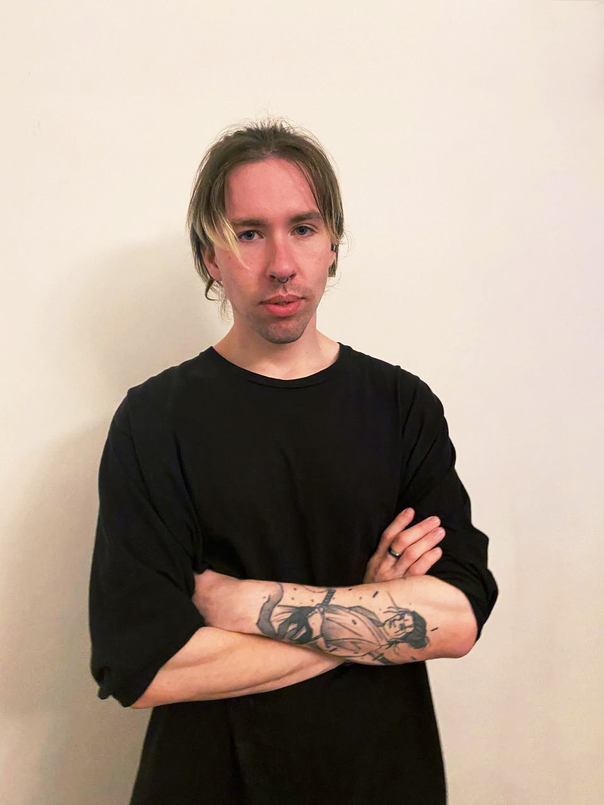

Software Engineer
Email: goriakinivandev@gmail.com
Web: goriakin-cv.me
Phone number: +(420)774-264-456
CV PDF: Ivan Goriakin CV

Hi, my name's Ivan I'm a Software Engineer.
The main things about me that I would like to highlight:
Teamwork, what could be more beautiful?
During the time I spent in IT, I managed to work on such frameworks as Scrum and Kanban.
Languages:
NestJS TypeScript REST APIs Swagger Git GitHub Docker Redis Scrum
As a Backend Developer at Navisys, I focus on developing and maintaining modules for our web platform. This includes creating new modules and writing tests for existing ones to ensure high quality and reliability. We follow the Scrum methodology to manage our projects efficiently. I work with technologies like NestJS, TypeScript, REST APIs, and Swagger to build robust backend systems. Tools such as Git, GitHub, Docker, and Redis are integral to our development process. I collaborate closely with frontend developers and other team members to ensure seamless integration and to meet project requirements. Our use of Scrum helps us stay organized and deliver on our commitments.
Docker Jira Git Microsoft Business Central Application Language Microsoft Azure
As a Product Developer at Microsoft Business Dynamics, I focus on building and improving modules for our application. This means creating new modules based on what our clients need and updating existing ones to work better. I use Docker, Microsoft Azure, and Jira to make development smoother. Docker helps me package applications neatly so they can run smoothly across different systems. Microsoft Azure provides the tools we need to run our app online, and Jira keeps us organized and on track. I work closely with other teams to understand what users want and to make sure our designs make sense. We use Jira to keep everyone in the loop and track our progress. In terms of the tech stuff, I mainly work with the Microsoft Business Dynamics language. I'm always learning new ways to make our software faster and more reliable to meet our clients' needs.
Agile Kanban
In this project, I worked as a data annotator. My team and I worked on improving unmanned devices.
The work was done on our own software. Thanks to frequent meetings with our German colleagues, we were constantly improving the work.
Our teams worked on agile. Every day our team processed large amounts of data to achieve quality results.
Agile Scrum PL/SQL PostgreSQL SQL
I got into Raiffeisen Bank as a student. This is the place that showed me the joy of working in a team.
Raiffeisen was the first big organization I worked in.
The bank has an outstanding IT department, from the very beginning we started working on the Skrum framework.
I can distinguish several main stages of development in projects, the day always started with a small meeting,
where we had a debriefing, what was done, what was to be done. We were an Oracle development team, for the bank's needs.
I used:
Android Xamarin SqLite SQL C# XAML GitHub Agile Kanban Trello
Like many ideas, these were no exception :)
The idea to create their own applications originated in the student dormitory,
when students from the Faculty of Software Engineering and the Faculty of Design got together.
I had a Japanese language learning application for personal use. After a long talk,
it was decided to make an Android App for mobile (because it's cheaper and legally easier :) ).
Next, I took the role, if I may say so, the leader of the team, thanks to the experience I received,
it was easy to make a development plan. Immediately it was decided to work on a Kanban framework, because
I already knew that it is well suited to the implementation of such a project. Initially there were 3 people,
two designers and one developer, over time, we began to pull new developers who have never before engaged in any
development. Then I took on the role of Mentor, training new team members was important.
Since the projects came out non-commercial, everyone worked for the initiative and for the CV.
I held meetings every other day to understand what was done and what still needed to be done.
From the beginning we started working with boards, to decompose and consolidate tasks(Trello).
We used GitHub to share code. From the beginning we decided to use Xamarin technology based on the C# language.
During the development we needed a database, we used SqLite library to work with the database.
Summarized, I organized the work of the team of 5 people.
In the project, I held the position of:
Android Xamarin SqLite SQL C# XAML GitHub Agile Kanban Trello Google Play
The Korean language project was started in parallel with the Japanese language project,
and after distributing the workload among the developers, it was decided to start making a second mobile application.
At that time, the Japanese language app was 75% complete, so it was taken as the basis.
While writing the project we found bugs and non-optimized places, also a lot of time was given to the adaptivity of the application.
Also the nuances of placing the application on the platform Google Play have been studied.
The basic concept of development remained the same as in the first project.
Faculty of Applied Informatics
Major: Software Engineering
September 2021 - Present
Python C# C Git MySQL SQL SqLite Linux Wolfram Mathematica Entity Framework HTML CSS Bootstrap JavaScript PHP Laravel WordPress API GUI
About University:
Tomas Bata University is an open and flexible higher education institution, developed in accordance with five central values:
Major: Computer Science
September 2016 - June 2020
C# PHP Git HTML CSS MySQL SQL Bootstrap JavaScript Linux
Omsk Automobile Transport College is an educational institution for training specialists in various fields,
one of which is Programming in Computer Systems.
At the top are the basic skills learned at College of Motor Transport.
C# Unity Git Itch
About Game Jam:
The hackathon for PC game development, where PC game developers come together to create a game on a predefined theme within 48 hours.
Tempted to take part but not sure if it's for you? Participants in game jams are most often programmers, graphic designers, game designers,
writers, sound designers and musicians...
At the end of the contest our team won first place with the game Hades Eternal Gift.
Before that there was a lot of, I hope, not very tedious information :)
Now personally about me and my hobbies:
I like to travel and learn new things, for example now, every summer I try to go to work in America, make new friends and new acquaintances.
I also really like to drive, last summer I drove from the Canadian border to Washington DC.
I also like computer games.
And what stuck in my heart was Japan and its culture.
I used to play hockey, now unfortunately it is not possible, but in the future I would like to get back into my favorite sport.
To summarize:
Ivan Goriakin, 23yrs - goriakinivandev@gmail.com